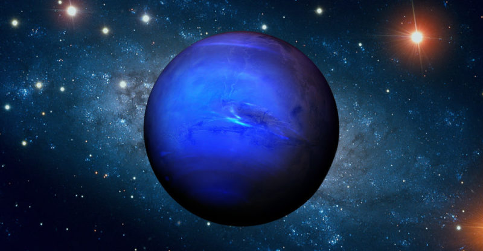

P L A N E T A S | J O V I A N O S
A Júpiter, Saturno, Urano, y Neptuno se les conoce como los planetas Jovianos (relativos a Júpiter), puesto que son gigantescos comparados con la Tierra, y tienen naturaleza gaseosa como la de Júpiter. Los planetas Jovianos son también llamados los gigantes de gas, sin embargo algunos de ellos tienen el centro sólido. El diagrama siguiente muestra la distancia aproximada de los planetas Jovianos al Sol.
En el otro extremo del espectro están los gigantes gaseosos conocidos como planetas Jovianos. Están etiquetados como Jovianos después de Júpiter, el más grande del grupo. La palabra ‘joviano’ proviene de Jove , otro nombre del dios romano Júpiter.
Todos los planetas Jovianos orbitan lejos del sol. Son mucho más grandes que los planetas terrestres y son bastante diferentes de ellos en términos de estructura y composición. Por ejemplo, no tienen superficies sólidas y sus capas externas están compuestas predominantemente de gases ligeros.
Los planetas Jovianos son Júpiter, Saturno, Urano y Neptuno. Orbitan lejos del sol. Estos planetas no tienen superficies sólidas y son esencialmente grandes bolas de gas compuestas principalmente de hidrógeno y helio. Son mucho más grandes que los planetas terrestres (Tierra, Mercurio, Venus y Marte).
Júpiter es, con mucho, el planeta más grande de nuestro sistema solar. Saturno es mejor conocido por sus hermosos anillos. Urano es único porque gira de lado y Neptuno se caracteriza por su gran órbita y su color azul profundo.
- J U P I T E R
Júpiter, se conoce como la gran mancha roja, es el quinto planeta desde el Sol y es, con mucho, el planeta más grande de nuestro sistema solar. En realidad, es dos veces más grande que todos los demás planetas del sistema solar combinados y también el planeta que gira más rápido. Como ocurre con todos los planetas jovianos, es esencialmente una enorme bola de gas compuesta de hidrógeno y helio.
- S A T U R N O
Saturno es el sexto planeta desde el Sol y es más conocido por sus hermosos anillos. Saturno es lo suficientemente grande para albergar aproximadamente 750 Tierras. Tiene una densidad relativamente baja para su tamaño.Los anillos de Saturno están compuestos de hielo y roca, mientras que el planeta mismo está compuesto de hidrógeno y helio. Se sabe que Saturno tiene al menos 62 lunas, y la más grande se llama Titán.

- U R A N O
El radio de Urano es cuatro veces mayor que el de la Tierra y tiene 14,5 veces la masa de la Tierra. Urano, el séptimo planeta desde el sol, es único porque la inclinación de su eje es tan severa que en realidad yace de lado en el espacio. Urano está compuesto principalmente de hidrógeno y helio, con una pequeña porción de gases de metano y amoníaco presentes. La presencia de gas metano le da al planeta su color verde azulado.
- N E P T U N O
Neptuno es el octavo planeta del sol y es muy similar a Urano. Tiene un radio que es 3,9 veces mayor que el de la Tierra. Su gran órbita hace una revolución alrededor del Sol que tarda aproximadamente 163,7 años. Neptuno se caracteriza por su color azul profundo, que exhibe debido a la gran cantidad de gas metano que se encuentra en él.
